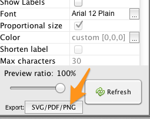

Coauthorship Networks¶
This tutorial was developed for the course Introduction to Digital & Computational Methods in the Humanities (HPS), created and taught by Julia Damerow and Erick Peirson.
Coauthorship networks are among the most popular models for studying the structure of research communities, due in no small part to the ease with which coauthorship networks can be generated.
In this tutorial, we will generate a coauthorship network using data from the ISI Web of Science database. See Getting Bibliographic Data.
Each step includes instructions for the Tethne command-line, the TethneGUI, and Python. Command-line steps assume that you have created an Alias for Tethne.
If you run into problems, don’t panic. Tethne is under active development, and there are certainly bugs to be found. Please report any problems on our GitHub issue tracker.
Getting Started¶
Before you start, you should choose an output folder where TethneGUI should store graphs and descriptions of your dataset.
You should also choose a dataset ID. This is a unique ID that Tethne will use to keep track of your data between workflow steps.
Initialize TethneGUI¶
When you first start TethneGUI, you should see a window like the one shown below. Click Select folder... to specify your output folder. A dataset ID should be automatically generated for you; you can change this if you wish.

Once you’ve selected an output folder and a dataset ID, click the Run Tethne... button.
Reading WoS Data¶
You can read WoS data from one or multiple field-tagged data files.
Command-line¶
Use -I examplID to specify your dataset ID, and -O /Users/erickpeirson/exampleOutput to specify your output folder.
--data-format=WOS tells Tethne that your data are in the Web of Science field-tagged format.
$ tethne -I exampleID -O /Users/erickpeirson/exampleOutput --read-file \
--data-path=/Users/erickpeirson/Downloads/tests/savedrecs4.txt --data-format=WOS
----------------------------------------
Workflow step: Read
----------------------------------------
Reading WOS data from file /Users/erickpeirson/Downloads/tests/savedrecs4.txt...done.
Read 500 papers in 2.67462515831 seconds. Accession: 0ff65dc3-b8f7-4bdc-a714-2d2a539f10a9.
Generating a new DataCollection...done.
Saving DataCollection to /tmp/exampleID_DataCollection.pickle...done.
TethneGUI¶
- Select your WoS data file. If you have one data file, click the Select a File.... If you have multiple data files in their own folder, click Select a Folder....
- Select the WOS file format.
- Click the Read files button.
Depending on the size of your dataset, this may take a minute or two. When TethneGUI is done reading your data, you should see messages like those depicted in the image below.

If your data are read successfully, click Next >.
Python¶
First import the tethne.readers module, then use the readers.wos.read() method to create a list of Paper instances. You can use readers.wos.from_dir() to import all of the WoS datafiles in a directory.
>>> # Parse data.
>>> import tethne.readers as rd
>>> papers = rd.wos.read("/Path/To/FirstDataSet.txt")
Then create a new DataCollection to organize your data.
>>> from tethne.data import DataCollection
>>> D = DataCollection(papers)
Slicing WoS Data¶
In this tutorial, we will analyze the evolution of a coauthorship network over time. To do this, we will slice our data using the date field of each paper in our dataset.
We’ll use the time_period slice method, which means that the data will be divided into subsets each containing data from a particular time period. The default window size is 1, and the window will advance by 1 year in each slice.
We’ll also use the cumulative slicing option, which means that the data from each time period will contain data from all of the previous time-periods. In other words, the 1957 subset will contain data from 1957, and the 1958 subset will contain data from 1957 and 1958.
Command-line¶
$ tethne -I exampleID -O /Users/erickpeirson/exampleOutput --slice -S date \
> -M time_period --cumulative
----------------------------------------
Workflow step: Slice
----------------------------------------
Loading DataCollection from /tmp/exampleID_DataCollection.pickle...done.
Slicing DataCollection by date...done.
Saving slice distribution to /Users/erickpeirson/exampleOutput/exampleID_sliceDistribution.csv...done.
Saving sliced DataCollection to /tmp/exampleID_DataCollection_sliced.pickle...done.
TethneGUI¶
The slice axis should be set to date by default. If not, select it from the Slice axis drop-down menu. Then click the Slice files button. After a few minutes, slicing should be complete; click Next >.

Slice Distribution¶
Tethne command-line (and TethneGUI) automatically generates a comma-separated values (CSV) file describing the number of records in each data slice. In your output folder look for a file called [DATASET_ID]_sliceDistribution.csv.

You can use your favorite spreadsheet software (e.g. Excel, Numbers, OpenOffice) to chart these data.

Python¶
Use the tethne.data.DataCollection.slice() method to slice your data.
>>> D.slice('date', 'time_period', window_size=1, cumulative=True)
Building the Coauthor Graph¶
Tethne will generate a graph using the AU field in your WoS data. See Structure of the WoS Field-Tagged Data File for more information about the fields available in a WoS datafile.
For now, we’ll ignore data slicing and generate a single coauthor graph from the entire dataset using the merged option. Later on, we’ll come back and use the data slicing to look at how the network evolves over time.
To generate a coauthorship network, we will tell Tethne to use authors for nodes, and use the coauthors graph type. For a complete list of graph types available in Tethne, see networks.
Command-line¶
$ tethne -I exampleID -O /Users/erickpeirson/exampleOutput --graph --merged \
> --node-type=author --graph-type=coauthors
----------------------------------------
Workflow step: Graph
----------------------------------------
Loading DataCollection without slices from /tmp/exampleID_DataCollection.pickle...done.
Building author graph using coauthors method...done in 0.144234895706 seconds.
Saving GraphCollection to /tmp/exampleID_GraphCollection.pickle...done.
Writing graph summaries to /Users/erickpeirson/exampleOutput/exampleID_graphs.csv...done.
TethneGUI¶
Select author from the Node type menu, and coauthors from the Graph type menu. Check the Ignore DataCollection slicing option, then click Build graph.

Once the graph is built, click Next >. For now, we’ll skip the analysis step. Click Next > again to reach Step 5: Write graph(s).
Python¶
To generate a single graph from your DataCollection, call the coauthors() method directly from the networks.authors module.
>>> import tethne.networks as nt
>>> ca_graph = nt.authors.coauthors(D.papers())
Write the Graph to GraphML¶
GraphML is a widely-used static network data format. We will write our graph to GraphML for visualization in Cytoscape.
This step should generate a file in your output folder called [DATASET_ID]_graph_all.graphml.

Command-line¶
$ tethne -I exampleID -O /Users/erickpeirson/exampleOutput --write --write-format graphml
----------------------------------------
Workflow step: Write
----------------------------------------
Loading GraphCollection from /tmp/exampleID_GraphCollection.pickle...done.
Writing graphs to /Users/erickpeirson/exampleOutput with format graphml...done.
TethneGUI¶
Select graphml from the Output format for graph(s) menu, then click Write graph(s).
Python¶
Use the to_graphml() method in writers.collection to create a GraphML data file.
>>> import tethne.writers as wr
>>> wr.graph.to_graphml(ca_graph, "[OUTPUT_PATH]")
[OUTPUT_PATH] should be a path to the GraphML file that Tethne will create.
Visualizing the Merged Network in Cytoscape¶
Cytoscape was developed in 2002, with funding from the National Instute of General Medical Sciences and the National Resource for Network Biology. The primary user base is the biomedical research community, especially systems biologists who study gene or protein interaction networks and pathways.
You can download Cytoscape 3 from url{http://www.cytoscape.org}. This tutorial assumes that you are using Cytoscape 3.0.2.
Import¶
In Cytoscape, import your network by selecting File > Import > Network > From file... and selecting the GraphML file generated by Tethne in your output directory.
Apply a Force Directed layout by selecting Layout > Prefuse Force Directed Layout.
Coauthorship networks are usually comprised of a very large connected component, and many very small components. For convenience, we will only look at the few largest components. Select the largest connected components (click and drag to create a selection box). Then create a new network with those selected components: select File > New > Networks > From selected nodes, all edges.

You should now see a new graph in its own viewing window, containing only the components that you selected.

Betweenness Centrality¶
This coauthorship network is clearly very modular: there are dense clusters connected by a few linking nodes that occupy sparse areas of the graph (so-called “structural holes”). We can identify the structurally most-significant actors by their “betweenness centrality.” Formally, betweenness centrality is a measure of the number of shortest paths that pass through a particular node.
Run Cytoscape’s network-analysis algorithm. Go to Tools > NetworkAnalyzer > Network Analysis > Analyze Network.

Cytoscape may ask you whether to interpret the network as directed or undirected. A coauthorship network is always undirected, since coauthorship is a symmetric relationship.

Once network analysis is complete, a window titled Results Panel will appear. Close this window.

To visualize the betweenness centrality of each node, create a new visual mapping.
- Go to the VizMapper tab, in the left part of the Cytoscape workspace.
- Find Node Size in the unused visual properties, and double-click to move it to the Node Visual Properties list.
- Click in the area to the right of Node Size and select BetweennessCentrality.
- Click in the area to the right of Mapping Type and select Continuous Mapping.

To change the size - centrality mapping function, double-click on the figure to the right of Curent Mapping, and drag the red open boxes up and down to change the angle of the function.

The largest nodes are the most central nodes in their respective connected components. These are the nodes most responsible for connecting disparate clusters in the network.
To see a list of the most central nodes, set the Table Panel to show all nodes.

Then sort by betweenness centrality by clicking on the column header in the Node Table (you may have to click twice to sort in descending order).

Institutional affiliation¶
Wherever possible, Tethne includes institutional affiliations for authors as node attributes. You should see institutions listed in the Node Table.

Create a visual mapping for institutional affiliation.
- Go to the VizMapper.
- Find Node Fill Color in the unused visual properties, and double-click to activate.
- Click to the right of ``Node Fill Color’’ and select ``institution’‘.
- Set the ``Mapping Type’’ to ``Discrete Mapping.’’ A list of institutions should appear below ``Mapping Type.’‘
- Right-click on Discrete Mapping'', and select ``Mapping Value Generators > Random Color.

Each node should now be colored according to its institutional affiliation. Inspecting the network yields an immediate impression of whether coauthorship clusters are due to affiliation with the same institution.

Since some institutions may be colored quite similarly, select a cluster to view the specific institutional affiliation of each node. You may need to set the Node Table to show selected rather than show all.

Circular layouts can also yield some insights into connectivity between different institutions. In the menu bar, select Layout > Attribute Circle Layout > institution. This should arrange the nodes in each connected component in a circle. Nodes that are affiliated with the same institution should be adjacent to each other, so that the circumference of each circle can be divided into regions that correspond to single institutions. Edges crossing from one region to another should give a visual impression of the magnitude of linkages between institutions.

A similar layout, the Degree Sorted Circle layout, can yield more information about the structure of the network. As the name suggests, this layout arranges nodes in ascending order of degree (the number of links that each node has with other nodes in the network). The lowest-degree nodes begin just west of due-south, and degree increases clockwise around the circle so that the highest-degree nodes are just east of due-south. In the network depicted below, there is extremely dense connectivity among the highest-degree nodes, while the rest of the graph is sparse by comparison. In other words, the most well-connected nodes are all highly connected to each other. This may be due in part to papers with a very large number of authors.

To export an image of your network, select File > Export > Current Network View as Graphics, and follow the prompts to save your image.
Inter-institutional Collaboration in Gephi¶
Gephi provides additional tools for analyzing coauthorship networks. In this section, we’ll use Gephi to generate an inter-institutional collaboration network using your coauthorship network. That is, we will mash authors from the same institutions together into institutional nodes, and combine coauthorship edges so that we can see the magnitude of coauthorship activity between different institutions.
Import & visualize¶
- In Gephi, select File > Open... and select your GraphML network file.
- Click on the Preview tab.

- Open the Graph window: select Window > Graph.

- Open the Layout window: select Window > Layout.
- In the Layout window, select the Force Atlast 2 layout, then click Run. After a few seconds the graph should be spread out; click Stop.

Partition by institution¶
- Open the Partition window: select Window > Partition. You may need to drag the window to the left-hand area of the Gephi workspace.
- In the Partition window, you should be on the Nodes tab by default. Click the green ``refresh’’ button, then select ``institution’’ from the drop-down menu. You should see a list of all institutions.
- To color nodes by institution, click the Apply button.

Zooming in on the network, you’ll notice that some clusters of nodes are comprised of one or a few colors, while other clusters are quite mixed. Just as in Cytoscape, this gives a visual impression of which research communities involve inter-institutional collaborations, and which are more internal to a particular institution.

Gephi makes it easy to collapse individual author nodes into nodes corresponding to their institutions. Cytoscape has this feature as well, but not all of the bugs are completely worked out.
To group authors together into their respective institutions, click the Group button in the Partition window.
Click on the dark T button in the lower left corner to show node labels, and use the right-hand slider at the bottom of the Graph window to make the labels smaller or larger.
The result may look a bit messy. There are a few things to notice:
- The edges between authors have been pooled into edges between institutions. The edge weight indicates the number of coauthorship relationships between a pair of institutions.
- The biggest node is called null. This represents all of the authors for which no institutional information was available. You may wish to delete this node; right-click on the node and select Delete. When prompted, click Yes.

To re-layout the network, go back to the Layout tab, and run the layout algorithm again. You may notice that the network contracts rapidly. You may find it useful to reduce the edge width and zoom in, to achieve a nice node-size : edge-weight ratio.

To save an image of your network, click the SVG/PDF/PNG button in the lower-left corner of the Gephi workspace.
Coauthorship network evolution¶
This section describes how to generate a dynamic network with Tethne, and visualize that network in Cytoscape. Dynamic networks allow us to go beyond analyzing the final structure of a network, and ask how the structure of a network changes over time. In this case, we will use a dynamic network to see how a coauthorship network grows over time.
Since we used the --cumulative option when slicing our data, our dynamic network will only involve the addition of nodes and edges: older coauthorship relationships will not “expire.”
A seemingly ubiquitous property of social networks is that they tend to be “scale-free”. That is, the degree distribution follows a power-law: there are a few very highly-connected actors, and a very large number of poorly-connected actors. The intuitive interpretation of this behavior is that “the rich get richer.” In other words, if you’re already popular then you’re more likely to make new friends.
In this tutorial, we will visualize the impact of degree centrality on edge acquisition by using the analyze.collection.attachment_probability() algorithm in Tethne.
Command-line¶
Run the graph step again, but this time remove the --merged flag. This will create a separate graph from each of the data subsets created in the slice step.
$ tethne -I exampleID -O /Users/erickpeirson/exampleOutput --graph --node-type=author --graph-type=coauthors
----------------------------------------
Workflow step: Graph
----------------------------------------
Loading DataCollection with slices from /tmp/exampleID_DataCollection_sliced.pickle...done.
Using first slice in DataCollection: date.
Building author graph using coauthors method...done in 0.291323900223 seconds.
Saving GraphCollection to /tmp/exampleID_GraphCollection.pickle...done.
Writing graph summaries to /Users/erickpeirson/exampleOutput/exampleID_graphs.csv...done.
Use the -A attachment_probability argument in the --analyze step.
$ tethne -I exampleID -O /Users/erickpeirson/exampleOutput --analyze -A attachment_probability
----------------------------------------
Workflow step: Analyze
----------------------------------------
Loading GraphCollection from /tmp/exampleID_GraphCollection.pickle...done.
Analyzing GraphCollection with attachment_probability...done.
Writing graph analysis results to /Users/erickpeirson/exampleOutput/exampleID_attachment_probability_analysis.csv...done.
Saving GraphCollection to /tmp/exampleID_GraphCollection.pickle...done.
Use --write-format xgmml to select the dynamic XGMML export option.
$ tethne -I exampleID -O /Users/erickpeirson/exampleOutput --write --write-format xgmml
----------------------------------------
Workflow step: Write
----------------------------------------
Loading GraphCollection from /tmp/exampleID_GraphCollection.pickle...done.
Writing graphs to /Users/erickpeirson/exampleOutput with format xgmml...done.
This should create a new file called [DATASET_ID]_graph_dynamic.xgmml in your output folder.
TethneGUI¶
Use the < Back button to return to Step 3: Build Graphs. Uncheck the Ignore DataCollection slicing option, and then click the Build graph button again. Then click Next >.

At the analysis step, select attachment_probability from the Graph analysis algorithm menu, and click the Analyze graph(s) button. Then click Next >.

Finally, select xgmml in the Output format menu, and click Write graph(s). This should create a new file called [DATASET_ID]_graph_dynamic.xgmml in your output folder.

Python¶
Use the authorCollectionBuilder to build a GraphCollection from your DataCollection.
>>> from tethne.builders import authorCollectionBuilder
>>> builder = authorCollectionBuilder(D)
>>> C = builder.build('date', 'coauthors')
The analyze.collection.attachment_probability() method automatically updates node attributes in your GraphCollection.
>>> import tethne.analyze as az
>>> az.collection.attachment_probability(C)
Use the writers.collection.to_dxgmml() method to create dynamic XGMML.
>>> import tethne.writers as wr
>>> wr.collection.to_dxgmml(C, "[OUTPUT_PATH]")
[OUTPUT_PATH] should be a path to the XGMML file that Tethne will create.
Visualizing a dynamic network in Cytoscape¶
In Cytoscape, import your .xgmml file by selecting File > Import > Dynamic Network > XGMML File.... Apply a force-directed or spring-embedded layout.

In the VizMapper, map Node Size to attachment_probability.

Double-click on the function icon next to Current Mapping to edit the Node Size mapping function.
- Click the Min/Max button, and set the maximum value to 1.0.
- Slick on the Add button to create a new handle at an intermediate value. Drag the red open box up, and drag the corresponding black arrow left and right to alter the mapping function.
- Click OK.

In the Control Panel, select the Dynamic Network tab.
- Set the time resolution to roughly match the time-range of your network. In the example below, the network covers about 35 years, so a resolution of 1/50 was selected.
- Set Time smoothness to 0 ms.
- Use the slider to move through the states of your dynamic network. To view all states in succession, use the << Play and Play >> buttons.

The size of each node should reflect the relative probability that a node will accrue a new neighbor in the next time slice. Try zooming in on a particular region of your network, and move between two successive states to verify that this is the case.